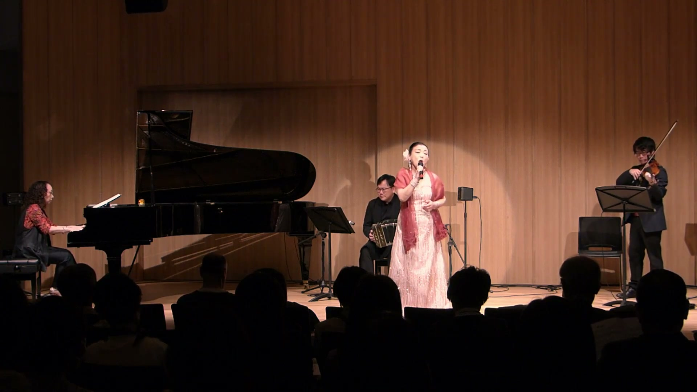

2025年3月22日 (土) 14:00 開演
歌うアルゼンチンタンゴ — Tango Argentina en Tsukuba
📍 つくばノバホール 〈小ホール〉 (つくば市吾妻 1-10-1)

▶満席のつくばノバホール小ホールにて開催された金字塔公演。 Mari & Lunaの艶やかなヴォーカルと、淡路七穂子タンゴトリオ（ピアノ、バンドネオン、バイオリン）が織りなす情熱の夕べ。 「想いの届く日」「リベルタンゴ」「ラ・クンパルシータ」など不朽の名曲が響き渡り、鳴り止まぬスタンディングオベーションを受けました。